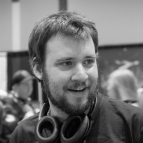
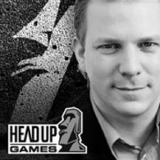
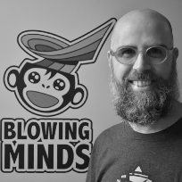
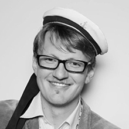
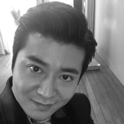

Main Speakers
Hasnul Hadi Samsudin
Vice President
MDEC
MDEC
David Gardner
Founder
London Venture Partners
London Venture Partners
Pasi Jokinen
Executive Adviser
Round Zero & Fingersoft
Round Zero & Fingersoft
Sean Kim
Senior Manager, Investment
NCSOFT
NCSOFT
Mark Lee
CSO
SuperTree
SuperTree
Yerim Lee
Project Manager
Neowiz Able Studio
Neowiz Able Studio

IAIN GARNER
Co-Founder
Another Indie
Another Indie

Dieter Schoeller
CEO & Founder
Headup Games
Headup Games

Oscar Sahun
Program Manager
GameBCN
GameBCN
Mark Venturelli
Founder & CEO
Rogue Snail
Rogue Snail
GTR Core Members

DANNY WOO
Co-founder & CEO
Global Top Round
Global Top Round
RICK NAHM
Co-founder & COO
Global Top Round
Global Top Round

ANDRÉ BERNHARDT
Director of Game Business
Global Top Round
Global Top Round

JIN J. KIM
Data Analyst & SW Developer
Global Top Round
Global Top Round
Mark Venturelli
Founder & CEORogue Snail
Mark Venturelli is Founder and CEO of Rogue Snail.
One of the most well-known developer on the Brazilian industry, with 12 years of experience, Mark acted as game designer and producer on titles such as Relic Hunters Legend, Chroma Squad and Dungeonland.
One of the most well-known developer on the Brazilian industry, with 12 years of experience, Mark acted as game designer and producer on titles such as Relic Hunters Legend, Chroma Squad and Dungeonland.
Hasnul Hadi Samsudin
Vice PresidentMDEC
Hasnul Hadi Samsudin is currently the Vice President of the Creative Content & Technologies of the Malaysia Digital Economy Corporation Sdn Bhd. He has played an integral role in developing the Malaysian Creative Digital Content Industry in the past few years through his capacity in various roles from within government and private sector.
He has acted as the Head of the MSC Malaysia Animation and Creative Content Center (MAC3). There, he has built initiatives from the ground up to accelerate the growth of the industry
On of his recent postings was in Rhythm & Hues Malaysia, the Oscar-winning Visual Effects studio, as a Senior Manager. His role was to grow R&H locally and regionally to accelerate the local and regional VFX industry to world-class standards. This has led to many roles within creative media industry from associations like POSTAM and CCIG to being an advisor to academia within colleges and universities. Just before rejoining MDeC, he had worked with Sony Computer Entertainment to create opportunities for SCE in the region. An avid gamer and lover of animation and films – he now lives his passion in supporting the development of the creative digital content industry. #MYGameOn #AnimationMY.
On of his recent postings was in Rhythm & Hues Malaysia, the Oscar-winning Visual Effects studio, as a Senior Manager. His role was to grow R&H locally and regionally to accelerate the local and regional VFX industry to world-class standards. This has led to many roles within creative media industry from associations like POSTAM and CCIG to being an advisor to academia within colleges and universities. Just before rejoining MDeC, he had worked with Sony Computer Entertainment to create opportunities for SCE in the region. An avid gamer and lover of animation and films – he now lives his passion in supporting the development of the creative digital content industry. #MYGameOn #AnimationMY.
Mark Lee
CSOSuperTree
Mark Lee has 11 years’ experience in business strategy development as a serial entrepreneur, private investor, author and columnist of The Herald and Kyunghyang News. After starting his career at Korea Telecom in business strategy and content investment, he has led many successful marketing campaigns and generation strategies for Gamevil, Longtu Korea, and various companies. As a co-founder of 3 start-up companies in Korea, he has been an executive charged with helping formulate, facilitate and communicate an organization's plans for the future including 2 successful M&A deals. Currently, he is a CSO at SuperTree.
Yerim Lee
Project ManagerNeowiz Able Studio
Yerim Lee is a junior adventurer thriving and challenging to become a 'new wizard' of the game industry, just like what her company 'Neowiz' means. Born in Korea but raised in Russia, Yerim is the best living practice of successful glocalization herself. Currently she is working as a project manager at Global Business Department in Neowiz Able Studio, supporting overseas expansion - everything from discovering new titles to mapping out strategies - with her youthful passion and communication skills.
Pasi Jokinen
Executive AdviserRound Zero & Fingersoft
Pasi Jokinen is a passionate product creator with more than 20 years of experience in creating new physical devices and digital services. At Round Zero Pasi helps the team build tools to make indie developers' lives easier. Understanding the needs of the end user and measuring high quality metrics about the things that matter is his forte. Pasi spends his free time helping other product creators - helping startups and game developer communities in Europe and China.
Pasi is a founder & adviser at Round Zero and is also a a member of the board of directors at Fingersoft.
Pasi is a founder & adviser at Round Zero and is also a a member of the board of directors at Fingersoft.
Matthew Butler
Program & BD ManagerYodo1
David Gardner
FounderLondon Venture Partners
David is Founder and General Partner of LVP.
He has over 30 years experience in the gaming sector.
Former CEO & board director, Atari Previously EVP & COO, Worldwide Studios, Electronic Arts ("EA"). 25 years at EA including building EA Europe from 0 to $1bn in annual revenue. DG has spent his career working across Silicon Valley and Europe. In 2007, David was awarded the Order of the British Empire for his services to industry, and in 2017 he was appointed BAFTA's first Vice President for Games.
He has over 30 years experience in the gaming sector.
Former CEO & board director, Atari Previously EVP & COO, Worldwide Studios, Electronic Arts ("EA"). 25 years at EA including building EA Europe from 0 to $1bn in annual revenue. DG has spent his career working across Silicon Valley and Europe. In 2007, David was awarded the Order of the British Empire for his services to industry, and in 2017 he was appointed BAFTA's first Vice President for Games.
Everett Wallace
Director of China PublishingYeahmobi
IAIN GARNER
Co-FounderAnother Indie
Iain Garner has worked in the Asian game industry for the last 6 years and has helped developers throughout Asia reach a worldwide audience through his work at publisher, Another Indie. Iain spends his time battling bug, tuning timelines, and waging a never ending war against Steam’s algorithm. He has extensive experience in China and is always ready to scream “DID YOU LOCALISE IT INTO CHINESE” at unwary game devs.
Sean Kim
Senior Manager, InvestmentNCSOFT
Sean Kim is highly experience in the game business including marketing, contents producing and monetization with more than twelve years of working in NCSOFT. He started his career as a project manager of casual games such as a shooting, a midcore-rpg and a rhythm action game. After three years of overseas business as well, he is now in charge of investment team leader regarding mobile, console and other platform based game.
Oscar Sahun is an industrial engineer and has a master's degree in design and development of video games from the UPC. In 2011 he decided to reorient his professional career towards the video game sector to take advantage of his creativity and artistic skills because games have always been passion. He worked as Game Designer (freelance) and until now he has completely designed five games of different types (platforms, adventure, simulation, runner i brain training). Currently he has created with his friends his own indie videogame studio where he create fun and entertainment for all audiences : we develop games with an added educational, cultural and / or social value.
He is a methodical, organized person, with great planning skills, used to working under pressure, and with great artistic and creative skills.
He is a methodical, organized person, with great planning skills, used to working under pressure, and with great artistic and creative skills.
After graduating from law school, Dieter Schoeller worked for several gaming and media companies such as Ubisoft, Koch Media and the Bertelsmann group before founding Headup Games in 2009, an independent games publisher located in Germany.
His company has been awarded as Best German Publisher in 2012, 2013 and 2017 by the German Developers Association. Since the foundation, Headup Games has published over 100 games, including many projects from highly talented developers that are known for their potential and creativity. The company’s portfolio features high-quality games such as Super Meat Boy, The Inner World, The Binding of Isaac, Terraria, Limbo, The Basement Collection, Grotesque Tactics, Q.U.B.E., Frozen Synapse and many more as well as the million sellers #1 iOS Hits The Inner World, Bridge Constructor and Bridge Constructor Portal.
His company has been awarded as Best German Publisher in 2012, 2013 and 2017 by the German Developers Association. Since the foundation, Headup Games has published over 100 games, including many projects from highly talented developers that are known for their potential and creativity. The company’s portfolio features high-quality games such as Super Meat Boy, The Inner World, The Binding of Isaac, Terraria, Limbo, The Basement Collection, Grotesque Tactics, Q.U.B.E., Frozen Synapse and many more as well as the million sellers #1 iOS Hits The Inner World, Bridge Constructor and Bridge Constructor Portal.
Danny is Founder and CEO at GTR. He has 10+ years experience in business strategy development from small/medium to industry-leading companies such as Samsung and NHN. Most recently, he has built his professional career as a venture capitalist participating in a 15 Million dollar game fund investing into early stage game startups at NHN Investment. He is also co-founder of Tab the Momentum, an internet/mobile startup accelerator in Korea which invested into over 20 startups and helped them grow substantially.
Now at GTR, Danny and his team are acting as angel investors, and consultants for startups - mixing up business and investment knowledge, providing skills and networks and establishing a robust ecosystem of gaming experts and business professionals from the gaming sector to help game studios and individual game developers to get to the next level. Danny truly believes that the GTR ecosystem can help game developers make creative and commercial games and to pursue sustainable futures.
Now at GTR, Danny and his team are acting as angel investors, and consultants for startups - mixing up business and investment knowledge, providing skills and networks and establishing a robust ecosystem of gaming experts and business professionals from the gaming sector to help game studios and individual game developers to get to the next level. Danny truly believes that the GTR ecosystem can help game developers make creative and commercial games and to pursue sustainable futures.
André Bernhardt is extensively experienced within the video games business as he has been a part of the German games industry for 16 years - online as well as offline and mobile. In the beginning of his career he was a producer for classical boxed console and PC-games business with the release of the Playstation 1 at Sony Computer Entertainment. Afterwards he was working for German publishers, e.g JoWood and Sunflowers, before joining RTL Games and focused on "next-gen" console publishing (PS3, X360, Wii, DS, etc.). In 2009 he joined Travian Games in Munich. Since 2012 he has been working as a freelance agent called IndieAdvisor, supporting developers to find a publisher and vice versa. He also teaches at different high schools and frequently lectures at games conferences. Together with his long-time companion Thorsten Unger he founded Target Games.
RICK NAHM
Co-founder & COOGlobal Top Round
Rick has vast experiences in growing new businesses set out for global expansion. He has over 14+ years of managerial experience in the field of corporate strategy, business development and operations covering a range of business areas in gaming publishing and monetization in addition to other online businesses from leading corporations such as Electronic Arts, Naver, Hangame and Samsung Electronics.
Rick has an MBA from the Fuqua School of Business at Duke University. He brings to GTR a solid foundation and understanding of the industry and is committed to help grow the GTR ecosystem.
Rick has an MBA from the Fuqua School of Business at Duke University. He brings to GTR a solid foundation and understanding of the industry and is committed to help grow the GTR ecosystem.
JIN J. KIM
Data Analyst & SW DeveloperGlobal Top Round
Jin J. Kim is a Data Analyst and Software Developer in charge of system development and operation at GTR. Jin is now leading research and development for G.ROUND, user-powered global game testing publishing, and for blockchain technologies in GTR game ecosystem.
Graduating from the school of Computer System Technology (CST) at BCIT(British Columbia Institute of Technology) in Canada, and finishing a master degree in Computer Science from Soong-sil University in Korea, he is an expert in web development, machine learning, and distribute computing systems. Several years prior to joining GTR, Jin did research on an Exobrain project regarding a self-evoking knowledge base and reasoning platform based on the fundamentals of big data. He also worked on an expert knowledge acquisition system project, on online community contents search and analysis engine research project and on IT consulting at a startup accelerator.
Graduating from the school of Computer System Technology (CST) at BCIT(British Columbia Institute of Technology) in Canada, and finishing a master degree in Computer Science from Soong-sil University in Korea, he is an expert in web development, machine learning, and distribute computing systems. Several years prior to joining GTR, Jin did research on an Exobrain project regarding a self-evoking knowledge base and reasoning platform based on the fundamentals of big data. He also worked on an expert knowledge acquisition system project, on online community contents search and analysis engine research project and on IT consulting at a startup accelerator.
COPYRIGHT 2018 © ALL RIGHTS RESERVED – GLOBAL TOP ROUND, INC.